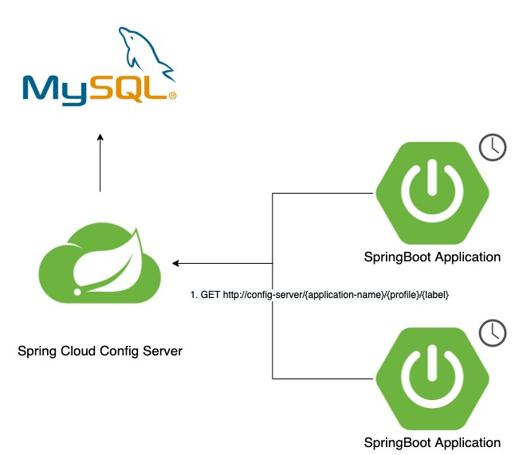
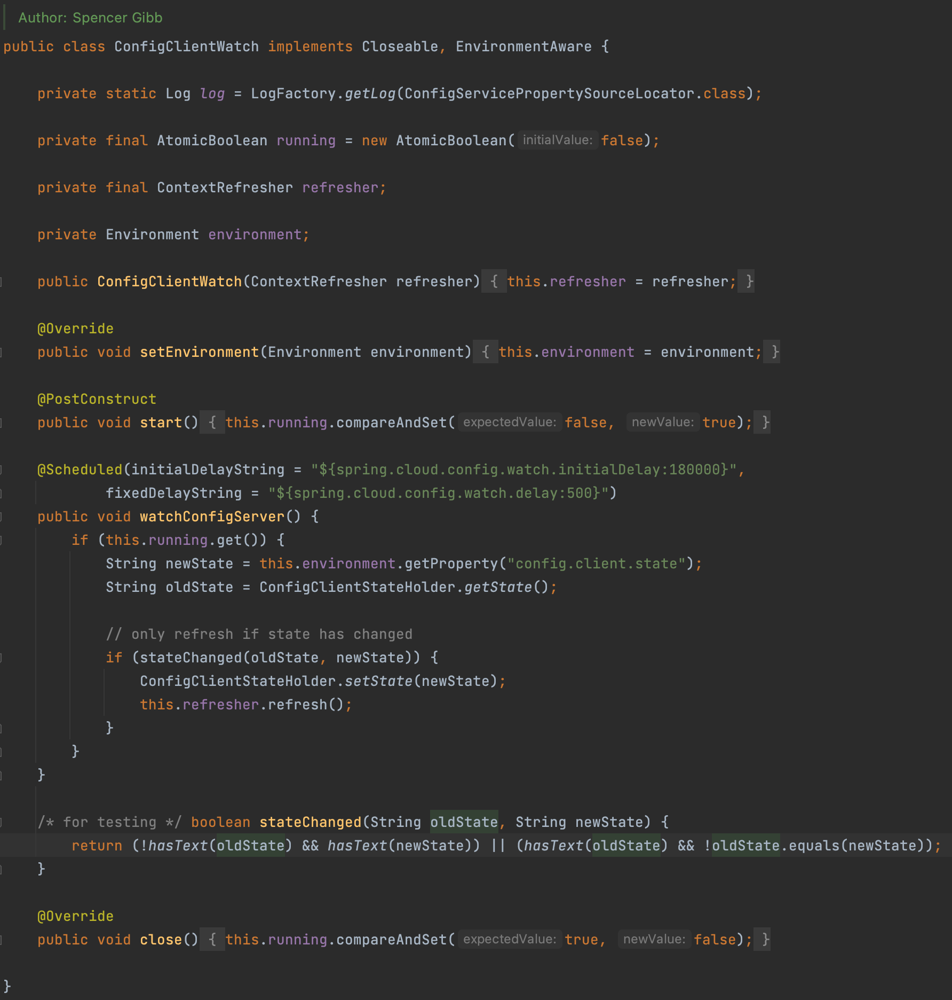
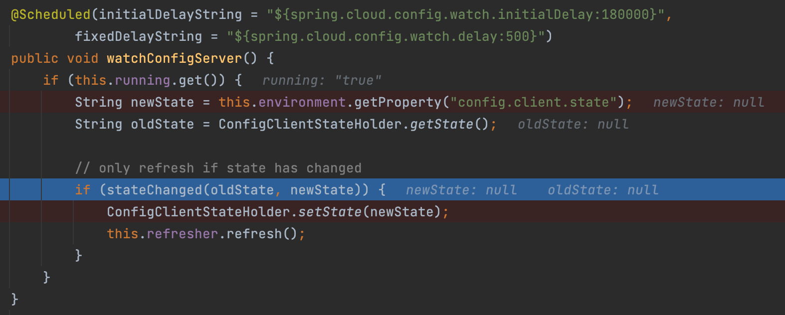
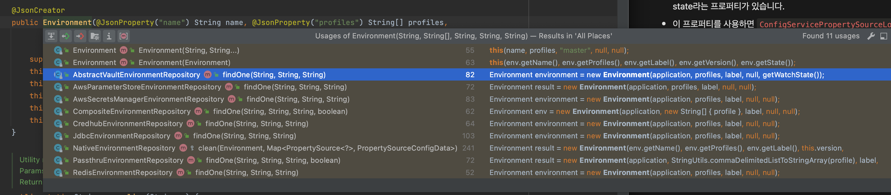
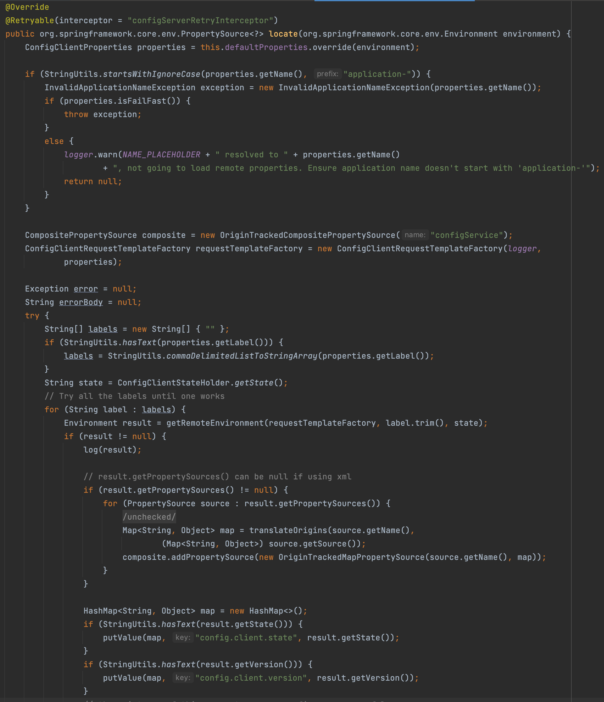
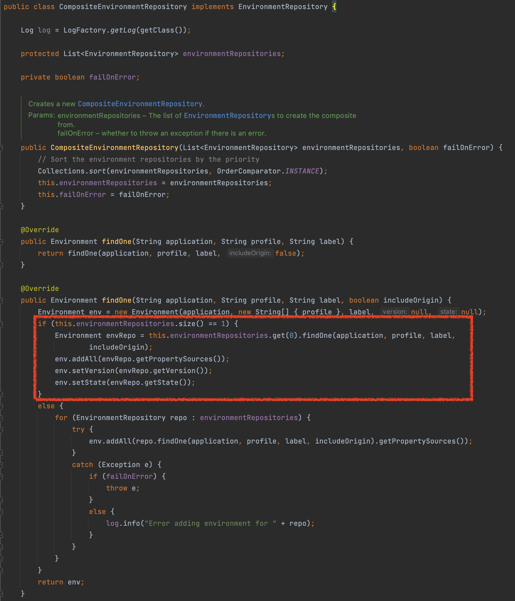

들어가며
해당 글에서 사용한 예제의 버전 정보는 아래와 같습니다
- kotlin 1.6.0
- Spring Boot 2.6.3
- Spring Cloud Dependencies 2021.0.1
Spring Cloud Config 관련 글은 총 4개의 글로 작성되었습니다.
- Spring Cloud Config 시작하기
- Spring Cloud Bus 시작하기
- Spring Cloud Config Monitor 시작하기
- Spring Cloud Config 주기적으로 Polling 하기
ConfigClientWatch 살펴보기

- 이 글에서는 주기적으로 config server에서 설정 정보를 가져와 반영하는 방법을 설명합니다.
- Spring Cloud Config 공식 문서에도 보이지 않는 히든(?) 기능 입니다.
- Spring Cloud Config Client 코드를 보다가 발견한 기능입니다.
- 처음 이 기능을 발견했을 때는 주기적으로 config server에서 설정 정보를 불러와 변경 사항이 있는 경우 context refresh를 트리거 하는 컴포넌트라고 생각했습니다.

설정하기
아래와 같이 설정 후, ConfigClientWatch를 실행해 보았습니다.
1 | spring: |
spring.cloud.config.watch.enabled=true- ConfigClientWatch를 사용합니다.
- 이 설정값이 true이어야 ConfigClientWatch bean이 생성됩니다.
spring.cloud.config.watch.initialDelay=5000- 클라이언트 애플리케이션이 실행되고 첫번째 polling을 시작하기 전까지 대기 시간 입니다.
- 단위는 ms(밀리세컨드) 입니다.
- 기본값은 18000ms (=3분)입니다.
spring.cloud.config.watch.delay=10000- ConfigClientWatch의 polling 주기 입니다.
- 단위는 ms(밀리세컨드) 입니다.
- 기본값은 500ms 입니다.
Spring Scheduler를 사용하는 모듈입니다.
1 |
|
- 스케줄러 bean이 등록될 수 있도록
@EnableScheduling어노테이션을 선언해 줍니다.
그러나 context refresh는 발생하지 않았다.

- config server에서 값을 변경하더라도 newState와 oldState의 값은 항상 null이었습니다.
- 따라서 stateChanged라는 메서드가 무조건 false로 떨어져 context refresh가 발생하지 않았습니다.
그럼 config.client.state값은 언제 바뀌는가?

- config.client.state라는 문자열을 검색하니
ConfigServicePropertySourceLocator라는 클래스에서 putValue 하는 코드가 보입니다 ConfigServicePropertySourceLocator의 locate 메서드는 getEnvironment라는 메서드를 통해 config server api를 호출하여 설정 정보를 불러 옵니다.- 이후 설정 정보에 getState한 값을 config.client.state 프로퍼티에 바인딩 해줍니다.
API 응답 값 중에 state 값이 있었나요?
1 | curl --location --request GET 'http://config-server/jaehun-microservice-router/local/master' |
1 | { |
- 위의 API를 호출하여 message-platform-router에 대한 설정 정보를 요청했고, 요청 응답에는 version과 state라는 프로퍼티가 있습니다.
- 이 프로퍼티를 사용하면
ConfigServicePropertySourceLocator를 이용해서 config.client.state라는 프로퍼티에 값을 변경할 수 있겠다고 생각했습니다.
config server에서 state 값은 어떻게 내려줄 수 있는가?

찾아보니 결과적으로는 state란 필드는 vault, native backend에서만 사용하는 것으로 확인하였습니다.
하지만 저는 JDBC Backend를 사용하기 때문에 결과적으로는 state 값을 이용하긴 어려웠습니다.
그래도 사용해보고 싶었습니다. (안되면 되게하라 ㅠㅠ)
StateSupportJdbcEnvironmentRepository라는 커스텀한 클래스를 생성하였습니다.
1 |
|
- JdbcEnvironmentRepository를 상속하여 StateSupportJdbcEnvironmentRepository 라는 클래스를 만들었습니다.
- super.findOne() 메서드를 호출하여 JdbcEnvironmentRepository에서 제공하는 기능을 그대로 사용하고 state 값만 채워주는 형태로 만들었습니다.
- state는 db 내의 configuration 정보의 마지막 수정일자를 기준으로 state를 설정하도록 하였습니다.
application.yml (client) 편집
1 | spring: |
중요한 부분을 몇가지 설명하겠습니다.
spring.cloud.config.server.jdbc.last-modified-timestamp-sql- 조회하고자 하는 설정 정보의 요소 중 가장 최신일자의 timestamp를 state 값으로 사용하기 위해 작성한 쿼리 입니다
- 설정 정보를 변경하면 modified_at 정보가 수정되므로 변경된 state를 API 응답값으로 내려줍니다.
- 클라이언트에서는 state 값이 변경됨을 인지하고 context refresh를 트리거 합니다.
spring.cloud.config.server.jdbc.enabled=false- enabled 옵션을 false로 해야 Spring Cloud Config에서 제공하는 JdbcRepository에 대한 Auto Configuration을 설정을 off 할 수 있습니다
- 우리가 작성한 StateSupportJdbcEnvironmentRepository를 Spring Cloud Config 코드에서 사용하기 위한 설정입니다.
여기까지 config server를 변경하고 다시 설정 정보를 조회해 보았습니다
1 | curl --location --request GET 'http://config-server/jaehun-microservice-router/prod/master' |
1 | { |
- 이제는 state에 가장 최신 수정시각에 대한 timestamp 정보가 나오는 것을 확인할 수 있습니다.
주의 사항!!

- CompositeEnvironmentRepository에서는 backend repository가 1개인 경우에만 state 정보는 set 해줍니다.
- 아래와 같이 backend 설정이 2개 이상 들어가는 경우에는 state를 사용할 수 없습니다.
1 | spring: |
클라이언트에서 ConfigClientWatch를 기반으로 CustomConfigClientWatch 생성하기
spring cloud config에서 제공하는 ConfigClientWatch는 스케줄링 주기 마다 config server에 설정 정보를 요청하는 코드가 없습니다.
따라서 아래와 같이 코드를 수정하여 CustomConfigClientWatch 클래스를 생성했습니다.
1 |
|
val newState = fetchState(environment)코드를 수정해 스케줄링 주기 마다 config server로 부터 설정을 불러오도록 합니다.- servicePropertySourceLocator.locate 로직에 의해 config server에서 받은 응답 중 state 값을 config.client.state 프로퍼티에 바인딩 합니다.
- config server에서 설정 정보가 변경된 경우 현재 메모리에 저장된 oldState와 비교하여 다른 경우 context refresh를 호출합니다.
application.yml (client) 설정 수정하기
1 | spring: |
spring.cloud.config.watch.enabled=false- 위의 설정을 통해 명시적으로 spring cloud config에서 제공하는 ConfigClientWatch 사용하지 않도록 설정했습니다.
요약
- spring cloud config에서 제공하는 ConfigClientWatch라는 기능을 사용하고자 했으나, vault, native backend에서만 지원하였습니다.
- JDBC Backend를 사용하기 때문에 Config Server에서 state 정보를 넣어 줄 수 있는 StateSupportJdbcEnvironmentRepository를 생성하였습니다..
- state 정보는 값이 변경되면 갱신됨을 알리기 위해 쿼리된 결과의 modified_at 정보 중 가장 최신 값을 사용하였습니다.
- 클라이언트에서는 CustomConfigClientWatch를 생성하고 ConfigServicePropertySourceLocator를 통해 주기적으로 config server의 설정 값을 불러오도록 코드를 수정하였습니다.
- 주기적으로 불러오는 config server의 state 값을 확인하고 메모리 상의 state와 다른 경우 context refresher가 동작하도록 하였습니다.
- 위와 같은 설정을 통해 JDBC Backend를 사용하면서도 주기적으로 클라이언트에서 config server의 설정 정보를 가져와 property 정보를 변경할 수 있었습니다.